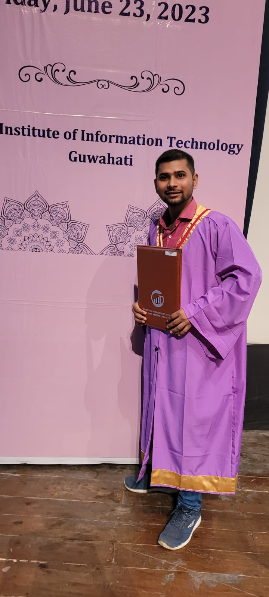

Sahil Maurya
📞 +91-7270020537
📧 sahil.maurya21@iiitg.ac.in
🏠 Janki Vihar Colony, Jankipuram
Lucknow, Uttar Pradesh, India - 226021
LinkedIn
Education
- Indian Institute Of Information Technology, Guwahati - M.TECH VLSI & Embedded System (May 2023) | CGPA: 9.11
- University Of Lucknow, Uttar Pradesh - B.TECH Electronics & Communication Engineering (2021) | Percentage: 66.1
- Board Of High School & Intermediate Education, Uttar Pradesh - Senior Secondary Education in Science (2016) | Percentage: 85
Personal Projects
- 1. Study Of Large Integer Multiplication For Cryptosystem (January-2023 – May-2023)
Academic Project - This project is based on designing a 32-bit, Toom-Cook-2.5 and Toom-Cook-3 multiplication algorithm for cryptosystem & their hardware implementation on FPGA. Comparative analysis between Toom-2.5 & Toom-3 multiplier in terms of Area, LUT, Delay, Frequency & Power.
- 2. Area and Power Efficient Approximate Modular Multiplier for R-LWE Cryptosystem (August-2022 – December-2022)
Academic Project - To design an area & power efficient modular multiplier for medium & high security level of R-LWE Cryptosystem on
45nm ASIC library which achieved an area & power reduction of 36% and 23% respectively along with 1.34x compared to state-of-art smallest exact R-LWE modular multiplier.
- 3. IoT Based Weather Monitoring System using Arduino UNO (December-2020 – May-2021)
Academic Project - Design an electronic device to capture & restore Temperature & Humidity and send data to the cloud or website for analysis.
Technical Skills and Interests
Programming Language: Verilog HDL, C
Synthesis & Simulation Tool: Xilinx Vivado & ISE, FPGA, Cadence Virtuoso, Genus, Innovus, Xcelium Logic Simulator, EDA Playground, Matlab & Simulink, TINA-TI, LTSpice, Tinkercad
Area Of Interest: Digital VLSI Design, Memory Design (SRAM, DRAM), Neuromorphic Computing, In Memory Computing, Quantum Cryptography, Hardware Architecture Design, Design Algorithms
Relevant Coursework
- 1. Digital VLSI Design
- 2. Analog Electronics
- 3. Low Power VLSI (CMOS)
- 4. VLSI Circuits and System
- 5. VLSI CAD Lab
- 6. System Modelling Lab
- 7. Architectural Design of Digital Integrated Circuits
- 8. In Memory Computing
Certifications
- 1. System Design Using Verilog HDL Training Course by Udemy (August-2022)
Achievements & Awards
- 1. Secure highest CGPA (9.11) in M.TECH ECE 2021-2023 batch from IIIT Guwahati
- 2. Certificate of Participation: Hands-on Training by Entuple Technology on Cadence RTL to GDS Flow
- 3. Certificate Course in System Design using Verilog by Udemy
- 4. Certificate Of Participation Xilinx Webinar on VLSI Design flow using Vivado by CoreEL Technologies and Xilinx
- 5. Certificate Of Participation VeriFi a Verilog HDL based digital design challenge by Department of Electronics and Communication Eng.,FET Jamia Millia Islamia in association with Electronic-Bit.
- 6. 2nd prize in Creative Writing competition by EN-LIT Lucknow University
"The future belongs to those who believe in the beauty of their dreams." - Eleanor Roosevelt
